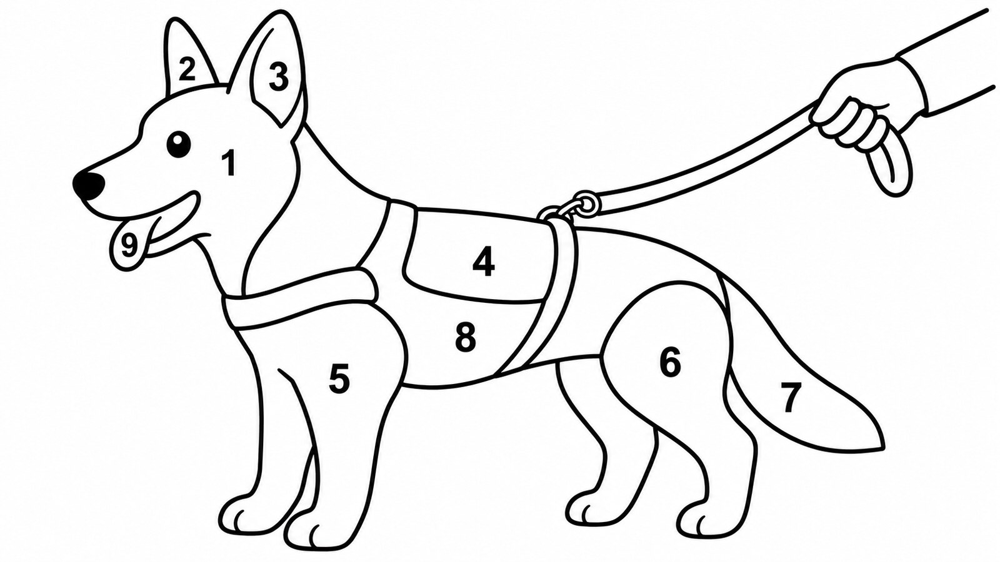

Misericordia di AricciaConfraternita di Misericordia di Ariccia ODV
Bambini · 3-5 anni
Colora il cane da soccorso
3-5 anni🐕 Colora liberamente il cane da soccorso e il suo conduttore.

I cani da soccorso aiutano i volontari a cercare persone disperse.